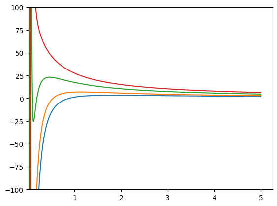
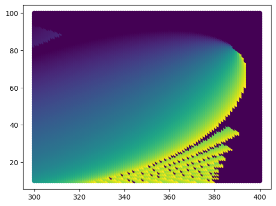
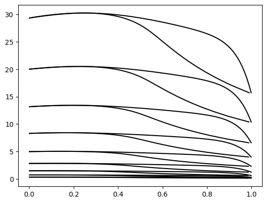
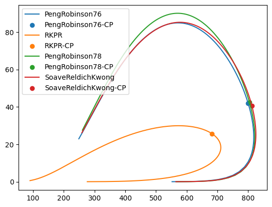
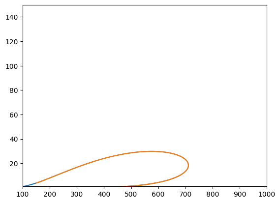

[24]:
# Installing the dev version into a google colab
try:
import google.colab
IN_COLAB = True
except:
IN_COLAB = False
if IN_COLAB:
!sudo apt-get install libnlopt-dev meson
%pip install fpm
!git clone https://github.com/ipqa-research/yaeos.git
%cd yaeos
!git checkout 5-python-api
!pip install ./python # -vv
%cd ..
%rm -r yaeos
[2]:
import yaeos
import numpy as np
[3]:
# Number of components, for easier definition
nc = 2
# kij and lij matrices
k12 = 0.1
lij = kij = np.zeros((nc,nc))
kij[0,1] = kij[1,0] = k12
mixrule = yaeos.QMR(kij, lij)
# Critical constants
Tc = [320, 375]
Pc = [30, 45]
w = [0.0123, 0.045]
model = yaeos.PengRobinson76(Tc, Pc, w, mixrule)
n = [1.0, 0.2]
model.lnphi_vt(n, v=2.0, t=303.15, dn=True)
[3]:
{'ln_phi': array([-0.18662712, -0.16554916]),
'dt': None,
'dp': None,
'dn': array([[-0.00186921, 0.00934604],
[ 0.00934604, -0.04673019]])}
Calculating an isotherm¶
[4]:
import yaeos as chadeos
import numpy as np
import matplotlib.pyplot as plt
nc = 2
n = [0.4, 0.6]
Tc = [190.564, 425.12]
Pc = [45.99, 37.96]
w = [0.0115478, 0.200164]
lij = kij = np.zeros((nc,nc))
mixrule = chadeos.QMR(kij, lij)
model = chadeos.PengRobinson76(Tc, Pc, w, mixrule)
V = 1.0
T = 303.150
ts = [150, 200, 300, 400]
for T in ts:
vs = np.linspace(0.01, 5, 1000)
ps = [
model.pressure(n, V, T, dn=True, dt=True, dv=True)["P"]
for V in vs
]
plt.plot(vs, ps)
plt.xlim(0.01, None)
plt.ylim(-100, 100)
plt.show()

Flash PT¶
[5]:
import yaeos
import numpy as np
P, T = 60.0, 294.0
n = [0.4, 0.6]
tc = [190.564, 425.12]
pc = [45.99, 37.96]
w = [0.0115478, 0.200164]
model = yaeos.PengRobinson76(tc, pc, w)
model.flash_pt(n, P, T)["x"]
[5]:
array([0.32424472, 0.67575528])
[6]:
ts = np.linspace(300, 400, 100, dtype=np.float64)
ps = np.linspace(10, 100, 100, dtype=np.float64)
betas = []
t = []
p = []
[7]:
for i in range(len(ts)):
for j in range(len(ps)):
flash = model.flash_pt(n, pressure=ps[j], temperature=ts[i])
t.append(ts[i])
p.append(ps[j])
betas.append(flash["beta"])
[8]:
import matplotlib.pyplot as plt
plt.scatter(t, p, c=betas)
[8]:
<matplotlib.collections.PathCollection at 0x7f6034a23cb0>

Modified Huron-Vidal MixingRule¶
[9]:
%%time
from yaeos import NRTL, MHV, PengRobinson76, yaeos_c, QMR
import numpy as np
import matplotlib.pyplot as plt
nc = 2
tc = [647.14, 513.92]
pc = [220.64, 61.48]
w = [0.344, 0.649]
a = [[0, 3.458], [-0.801, 0]]
b = [[0, -586.1], [246.2, 0]]
c = [[0, 0.3], [0.3, 0]]
b = np.array(b)
ge_model = NRTL(a, b, c)
mixrule = MHV(ge_model, q=-0.53)
null_mixing = QMR(np.zeros((nc,nc)), np.zeros((nc,nc)))
model_stock = PengRobinson76(tc, pc, w, null_mixing)
model_mhv = PengRobinson76(tc, pc, w, mixrule)
colors = ["red", "green", "blue", "orange", "black"]
ts = np.linspace(50+273, 200+273, 9)
import time
for i, T in enumerate(ts):
i=4
xs = np.linspace(0.001, 0.999, 100)
ys = []
ps = []
st = time.time()
for x1 in xs:
x = [x1, 1-x1]
sat = model_mhv.saturation_pressure(x, T, "bubble")
p, y = sat["P"], sat["y"]
ps.append(p)
ys.append(y[0])
plt.plot(xs, ps, color=colors[i])
plt.plot(ys, ps, color=colors[i])
CPU times: user 5.16 s, sys: 6.62 ms, total: 5.16 s
Wall time: 5.16 s

Phase envelope tracing¶
[3]:
import yaeos
import matplotlib.pyplot as plt
import numpy as np
import chemicals
[4]:
names = ["methane", "n-decane", "propane", "hexatriacontane"]
chems = []
Tc = []
Pc = []
w = []
zc = []
for c in names:
chem = chemicals.CAS_from_any(c)
Tc.append(chemicals.Tc(chem))
Pc.append(chemicals.Pc(chem)/1e5)
w.append(chemicals.acentric.omega(chem))
zc.append(chemicals.Zc(chem))
print(Tc)
print(Pc)
print(w)
print(zc)
[190.564, 617.7, 369.89, 872.0]
[45.992, 21.03, 42.512, 4.7]
[0.01142, 0.4884, 0.1521, 1.5125]
[0.28629030721213733, 0.24967993249432688, 0.27646156195497956, 0.17574246172567687]
[5]:
z = np.ones(len(names))
z = z/z.sum()
models = [
yaeos.PengRobinson76,
yaeos.RKPR,
yaeos.PengRobinson78,
yaeos.SoaveRedlichKwong,
]
for m in models:
if m == yaeos.RKPR:
model = m(Tc, Pc, w, zc)
else:
model = m(Tc, Pc, w)
T, P, Tcs, Pcs = model.phase_envelope_pt(
z, kind="dew", T0=150, P0=0.01, max_points=350
)
plt.plot(T, P, label=model.name)
plt.scatter(Tcs, Pcs, label=model.name + "-CP")
plt.legend()
plt.show()

[6]:
from ipywidgets import interact, fixed
import ipywidgets as widgets
from functools import cache
[16]:
%matplotlib inline
x = np.linspace(-10, 10,100)
def f(x, A, B, C):
return A*x**2 + B*x + C
fig = plt.figure()
ax = fig.add_subplot(1, 1, 1)
line, = ax.plot(x, f(x, A=1, B=1, C=1))
@cache
def run(i, x, n):
plt.clf()
z = np.ones(n)
z[i] = x
exclude = [i]
mask = np.ones(z.shape, bool)
mask[exclude] = False
z[mask] = (1 - x)/2
z = z/sum(z)
print(z)
models = [
yaeos.PengRobinson76,
# yaeos.RKPR,
# yaeos.PengRobinson78,
# yaeos.SoaveRedlichKwong,
]
ax.clear()
for m in models:
if m == yaeos.RKPR:
model = m(Tc, Pc, w, zc)
else:
model = m(Tc, Pc, w)
T, P, Tcs, Pcs = model.phase_envelope_pt(
z, kind="dew", T0=150, P0=0.01, max_points=1000
)
plt.plot(T, P, label=model.name)
T, P, Tcs, Pcs = model.phase_envelope_pt(
z, kind="bubble", T0=150, P0=0.01, max_points=1000
)
plt.plot(T, P, label=model.name, zorder=9)
plt.legend()
plt.show()
ax.set_xlim(0, 1000)
ax.set_ylim(0, 550)
return T, P
@interact
def update(i=[i for i in range(len(Tc))], x=(0.0001, 0.9999, 0.01), n=fixed(len(Tc))):
T, P = run(i, x, n)
RKPR¶
[17]:
import yaeos
from ipywidgets import interact, fixed, FloatSlider
import ipywidgets as widgets
import matplotlib.pyplot as plt
import numpy as np
import chemicals
[18]:
names = ["methane", "n-propane", "n-decane", "hexatriacontane"]
chems = []
Tc = []
Pc = []
w = []
zc = []
for c in names:
chem = chemicals.CAS_from_any(c)
Tc.append(chemicals.Tc(chem))
Pc.append(chemicals.Pc(chem)/1e5)
w.append(chemicals.acentric.omega(chem))
zc.append(chemicals.Zc(chem))
[23]:
%matplotlib inline
x = np.linspace(-10, 10,100)
def f(x, A, B, C):
return A*x**2 + B*x + C
fig = plt.figure()
ax = fig.add_subplot(1, 1, 1)
line, = ax.plot(x, f(x, A=1, B=1, C=1))
z = np.ones(len(names))
z = z/z.sum()
sliders = []
for i in range(len(names)):
sliders.append(
FloatSlider(
value=0.1, min=1e-5, max=15, step=0.01,
description=names[i]
)
)
def run(d1, d2, d3, d4):
print(d1, d2, d3, d4)
ax.clear()
model = yaeos.RKPR(Tc, Pc, w, zc, delta_1=[d1, d2, d3, d4])
T, P, Tcs, Pcs = yaeos.yaeos_c.pt2_phase_envelope(
model.id, z, kind="dew", t0=200, p0=0.01, max_points=500
)
ax.plot(T, P)
T, P, Tcs, Pcs = yaeos.yaeos_c.pt2_phase_envelope(
model.id, z, kind="bubble", t0=150, p0=10.0, max_points=500
)
ax.plot(T, P)
ax.set_xlim(100, 1000)
ax.set_ylim(1, 150)
return T, P
def update(**kwargs):
T, P = run(**kwargs)
interact(update, d1=sliders[0], d2=sliders[1], d3=sliders[2], d4=sliders[3])
[23]:
<function __main__.update(**kwargs)>

[ ]: